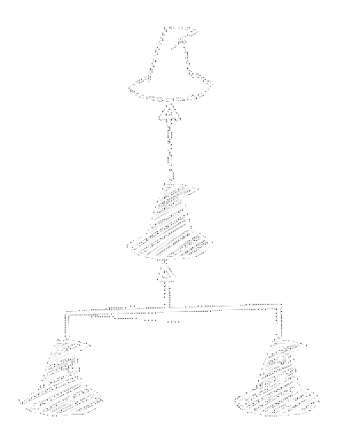
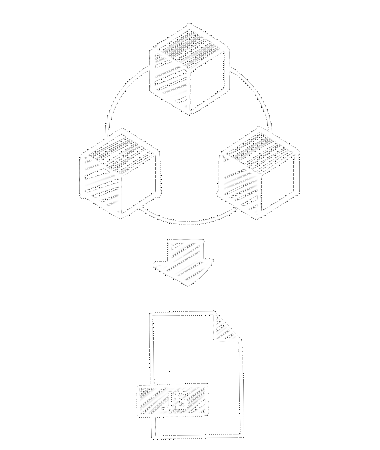

ECMAScript 5
ECMAScript 6+
Tipado Fuerte

Clases e Interfaces
Módulos
CommonJS

Empaquetado
Manejo de Recursos

Instalar paquetes de Node
$ npm install
phaser-ce # Duh (Phaser Community Edition)
typescript # Compilador de TypeScript
webpack # Empaquetador de Módulos
ts-loader # Cargar TypeScript en Webpack
expose-loader # Añadir módulos como objetos globales
# Y el resto: servidor, minificado, manejo de imágenes y css, etc...
TypeScript · Configuración
./tsconfig.json
{
"compilerOptions": {
"target": "es6",
"module": "commonjs",
"outDir": "dist",
"sourceMap": true,
"typeRoots": [ "./node_modules/@types" ]
},
"include": ["src/**/*.ts"],
"exclude": ["node_modules"]
}
./tsconfig.json
{
"compilerOptions": {
"target": "es6",
"module": "commonjs",
"outDir": "dist",
"sourceMap": true,
"typeRoots": [ "./node_modules/@types" ]
},
"include": ["src/**/*.ts"],
"exclude": ["node_modules"]
}
TypeScript · Definición de Tipos para Phaser
./src/scripts/app.ts/// <reference path="../../node_modules/phaser-ce/typescript/phaser.d.ts"/> /// <reference path="../../node_modules/phaser-ce/typescript/pixi.d.ts"/>
Webpack · Configuración
./webpack.config.jsconst path = require('path') const phaserModule = path.join(__dirname, '/node_modules/phaser-ce/') const phaser = path.join(phaserModule, 'build/custom/phaser-split.js'), pixi = path.join(phaserModule, 'build/custom/pixi.js'), p2 = path.join(phaserModule, 'build/custom/p2.js') module.exports = { devtool: 'inline-source-map', entry: './src/scripts/app.ts', output: { filename: 'app.js', path: path.resolve(__dirname, 'dist') }, resolve: { alias: { 'phaser': phaser, 'pixi': pixi, 'p2': p2, //Alias adicionales }, extensions: ['.ts', '.tsx', '.js'] }, module: { loaders: [{ test: /\.tsx?$/, exclude: /node_modules/, loader: 'ts-loader' }, { test: /pixi\.js/, use: ['expose-loader?PIXI'] }, { test: /phaser-split\.js$/, use: ['expose-loader?Phaser'] }, { test: /p2\.js/, use: ['expose-loader?p2']} //Loaders adicionales ] } //Configuraciones adicionales }
¡A importar!
./src/scripts/app.ts/// <reference path="../../node_modules/phaser-ce/typescript/phaser.d.ts"/> /// <reference path="../../node_modules/phaser-ce/typescript/pixi.d.ts"/> import 'pixi' import 'p2' import 'phaser'

¡A ver algo de código!